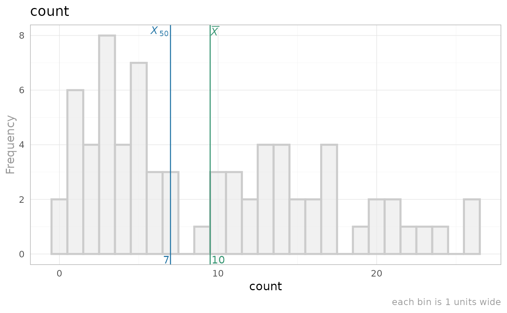
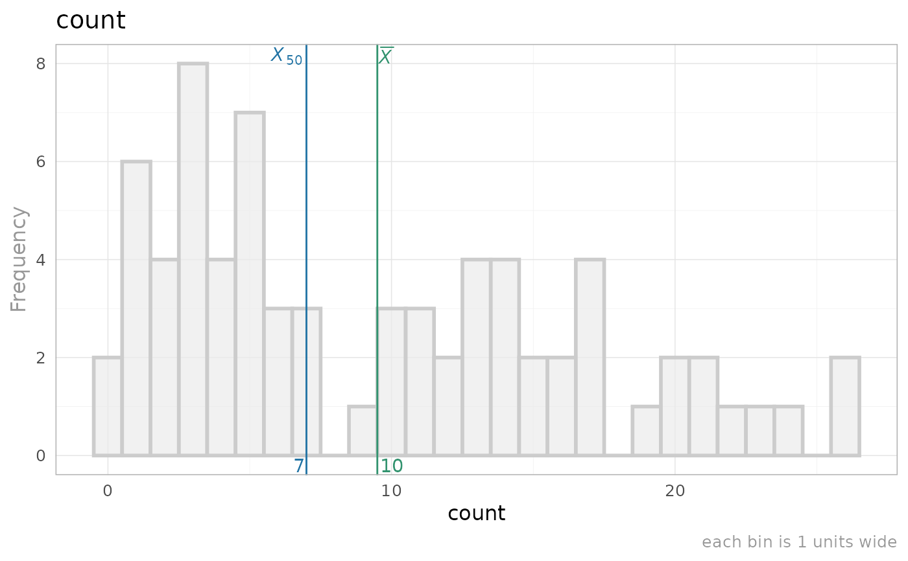
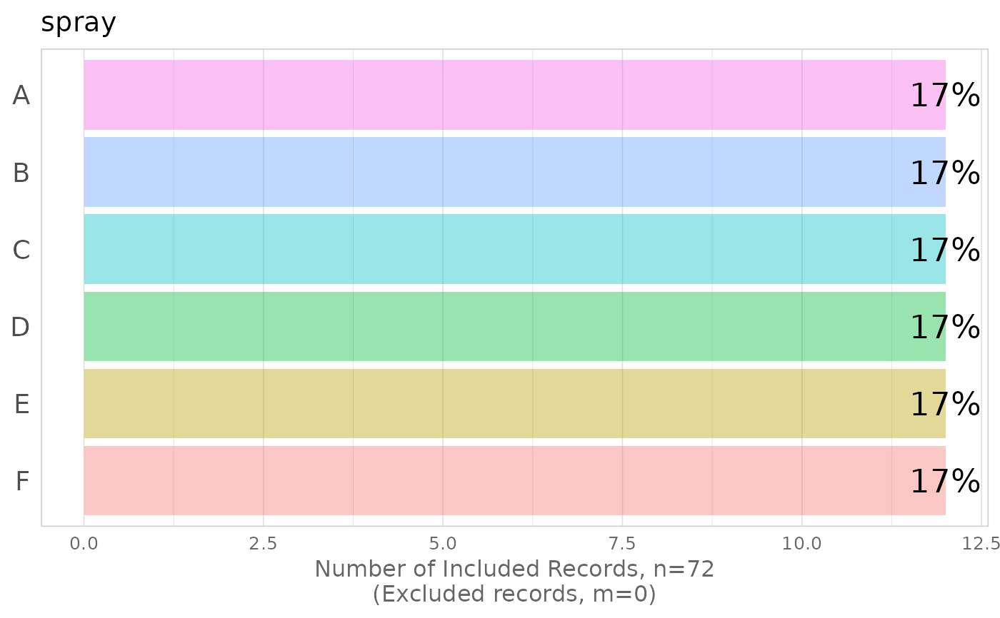

Construct a graph or list of graphs, whose characteristics are determined by a configuration file.
Arguments
- variable_name
The name of the single variable to graph.
- ds_metadata
The
data.framecontaining the metadata. Seecreate_manifest_explore_univariate.- d_observed
The
data.framecontaining the data to be graphed.
Examples
#d_observed <- beaver1
d_observed <- InsectSprays
ds_manifest <- TabularManifest::create_manifest_explore_univariate(d_observed, write_to_disk=FALSE)
construct_graph_univariate(variable_name="count", ds_manifest, InsectSprays)
#> $variable_name
#> [1] "count"
#>
#> $graph

#>
#> $remark
#> [1] ""
#>
construct_graph_list_univariate(ds_manifest=ds_manifest, d_observed=d_observed)
#> [[1]]
#> [[1]]$variable_name
#> [1] "count"
#>
#> [[1]]$graph

#>
#> [[1]]$remark
#> [1] ""
#>
#>
#> [[2]]
#> [[2]]$variable_name
#> [1] "spray"
#>
#> [[2]]$graph

#>
#> [[2]]$remark
#> [1] ""
#>
#>